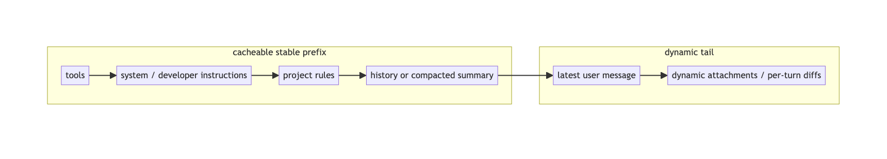
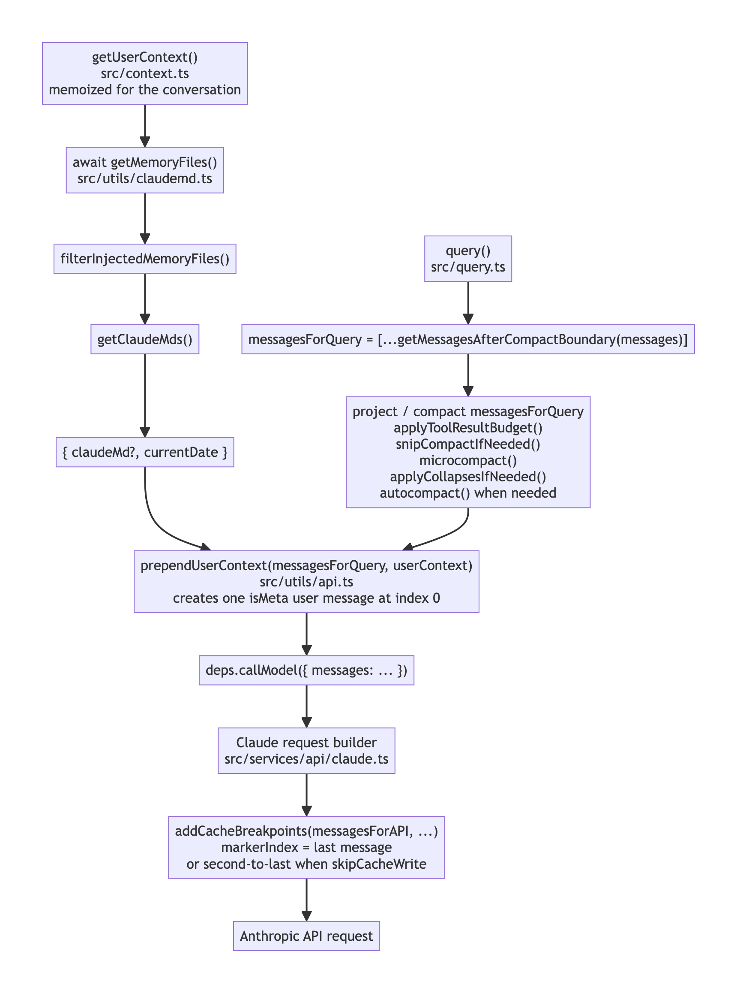
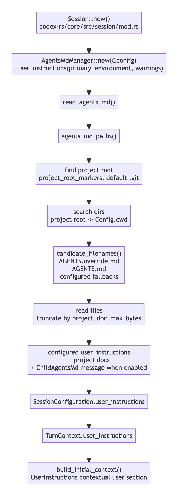
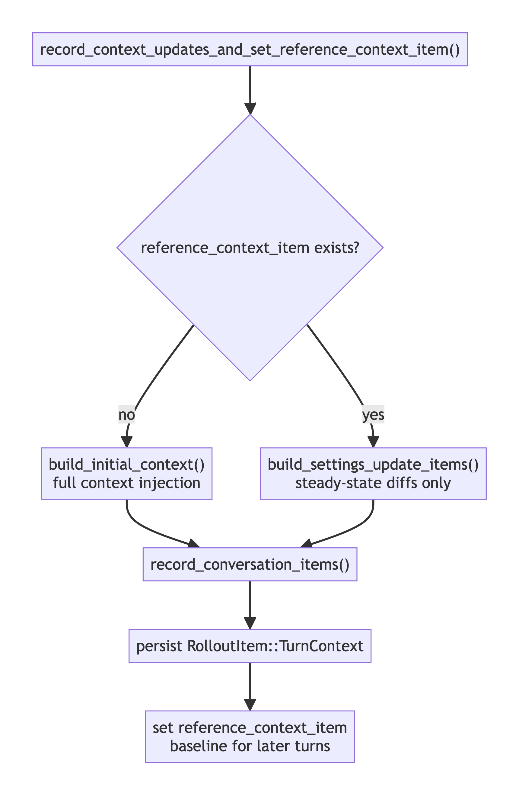
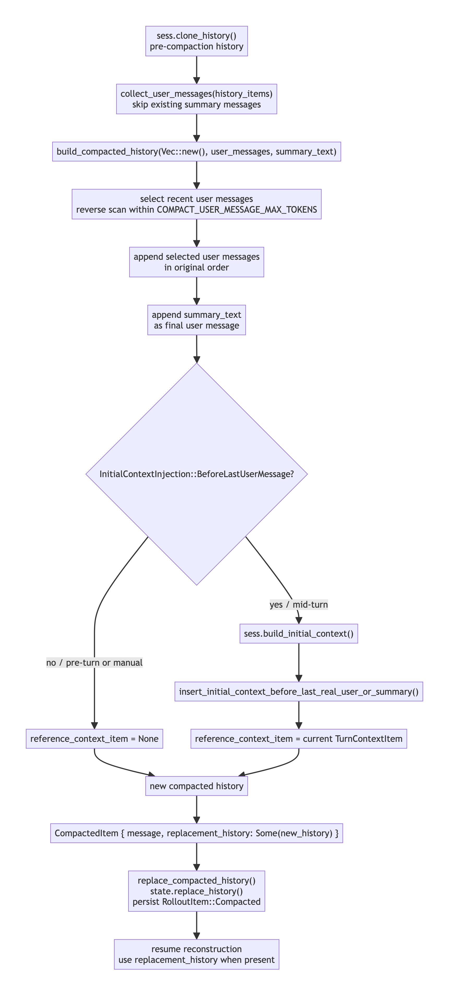

Claude Code 和 Codex 的 Prompt Cache 设计：真正重要的是模型看到的历史

长时间使用代码 Agent 时，一个问题很快会出现：上下文越来越大，但很多内容其实每一轮都重复出现。工具定义、系统规则、项目说明、历史摘要、最近几轮对话，这些内容每次都重新送进模型，既慢又贵。
Prompt cache 解决的就是这个问题。服务端把已经处理过的 prompt 前缀保存下来。下一次请求如果复用了相同前缀，就可以少做一部分计算。
这听起来像一个 API 功能，但在 Claude Code 和 Codex 这样的 Agent runtime 里，它会变成架构问题。因为 Agent 不是简单地把用户的一句话发给模型。它要把规则文件、工具列表、动态环境、会话历史、压缩摘要和最新用户输入组装成一个“模型视图”。Prompt cache 命中的不是本地 UI 里的完整历史，也不是磁盘上的日志，而是最后送进模型的那条有序输入。
本文从这个角度比较 Claude Code 和 Codex。重点不在“哪个更省 token”，而在它们怎样组织上下文、规则文件和 compaction，从而尽量不破坏缓存前缀。
1. Prompt cache 缓存的是前缀，不是语义相似
一次模型请求可以抽象成：
[tools]
[system / developer instructions]
[project rules]
[conversation history or summary]
[latest user message]
[dynamic attachments]Prompt cache 关心的是开头这一段是否稳定。它不是在判断“这轮内容大概意思一样”，而是判断请求前缀能不能复用。
这会带来一个直观但很容易被忽略的原则：
稳定内容应该靠前。
动态内容应该靠后。
如果每轮都在最前面插入当前时间、当前打开文件、随机 session 状态，那么即使后面 100 万 token 都没变，缓存前缀也可能从一开始就断掉。反过来，如果工具定义、系统规则、项目规则和历史摘要保持稳定，只在尾部追加本轮动态信息，缓存就有机会复用前面的大段内容。
Anthropic 和 OpenAI 的 API 都体现了这个原则，但暴露给客户端的控制面不同。
Anthropic Claude API 支持 cache_control。它可以在 content block 上显式放 cache breakpoint，也支持请求级 automatic caching。它的缓存前缀按 tools -> system -> messages 的顺序组织。OpenAI 的 prompt caching 更偏自动 prefix cache，客户端通过 usage.prompt_tokens_details.cached_tokens 观察命中，并可以使用 prompt_cache_key 帮助服务端稳定路由同一类请求。
这两个 API 差异会反向塑造 Agent runtime 的代码。
2. 规则文件不是“系统提示词的一次性塞入”那么简单
代码 Agent 通常有项目规则文件：
- • Claude Code 使用
CLAUDE.md和 memory files。 - • Codex 使用
AGENTS.md，也支持全局和项目级指令组合。
这些文件的作用类似：告诉 Agent 项目约定、代码风格、测试方法、目录结构、权限注意事项。
真正的问题不是“有没有规则文件”，而是规则文件在每轮请求中怎么出现：
- • 是会话开始时读取一次，然后在会话里稳定复用？
- • 是每次打开不同文件就重新加载一组规则？
- • 是写入会话历史，还是发 API 前临时组装？
- • compaction 后如何保持一致？
这些问题都直接影响 prompt cache。规则文件如果每轮变化，又被放在模型请求前面，就会破坏后面整段缓存前缀。
3. Claude Code：memoized user context 加显式 cache breakpoint
Claude Code 的 getUserContext 是理解它的入口。
源码路径：src/context.ts
getUserContext 返回的主要内容是：
- •
claudeMd：从CLAUDE.md/ memory files 收集出来的项目规则。 - •
currentDate：当前日期说明。
这个函数被 memoize 包起来。memoize 的意思是第一次计算结果后缓存起来，后续调用优先复用同一份结果，直到缓存被显式清理。也就是说，在常规会话里，Claude Code 不会每一轮都重新生成一份新的 CLAUDE.md context。
真正把这段 context 放进模型请求的是 prependUserContext。
源码路径：src/utils/api.ts
它会构造一条 meta user message，大致形态是：
<system-reminder>
As you answer the user's questions, you can use the following context:
# claudeMd
...
# currentDate
Today's date is ...
IMPORTANT: this context may or may not be relevant to your tasks.
</system-reminder>然后返回：
[meta user context, ...messagesForQuery]这点很重要：Claude Code 不是把规则内容永久写到每条用户消息前面，也不是给每个最新 user message 单独塞一次规则。它是在发 API 前，把一个 memoized meta user context 临时 prepend 到本次 messages 数组前面。
这会不会破坏 cache？答案取决于这条 meta user context 是否稳定。Claude Code 的实现显然知道这个风险，所以它把 getUserContext memoize，并且对动态信息做了尾部化处理。
最具体的例子是日期变化。
源码路径：src/utils/attachments.ts
代码注释说明，用户如果跨午夜继续工作，不应该刷新 messages[0] 里 getUserContext 产生的旧日期。刷新开头这条消息会改变缓存前缀，导致下一轮整段会话进入 cache creation。Claude Code 的做法是追加一个 date_change attachment 到尾部，让模型知道日期变了，但不改已经稳定的前缀。
这个设计说明了一条核心原则：
动态事实应该通过尾部附件进入上下文，而不是重写开头的规则块。Claude Code 这条请求组装链可以精确画成下面这样。图里把 tool-result budget、snip、microcompact、context-collapse、autocompact 折叠成一个“messagesForQuery 投影/压缩”节点，因为它们都会改变 messagesForQuery，但它们不是 getUserContext 的加载点。

4. Claude Code 的 cache breakpoint 在最后一条 message 附近
Claude Code 的 Anthropic 请求路径里有 addCacheBreakpoints。
源码路径：src/services/api/claude.ts
请求组装时会调用：
messages: addCacheBreakpoints(...)addCacheBreakpoints 的默认策略是把 message-level cache_control marker 放在最后一条 message 上；如果是 skip-cache-write 的 fork 场景，会挪到倒数第二条。源码注释强调每个请求只放一个 message-level cache marker。
这和 Anthropic 的缓存模型是匹配的：缓存的是到 breakpoint 为止的有序前缀。Claude Code 围绕这个 breakpoint 做了不少稳定性保护，包括：
- • 稳定
getUserContext。 - • 日期变化尾部化。
- • 工具 schema 或额外能力尽量放在后缀，减少前缀 churn。
- • TTL / cache_control 相关状态尽量在会话中保持稳定。
- • 用 cache break detection 观察系统块、工具块和 cache_control 的变化。
所以 Claude Code 的策略不是“绝不 prepend”，而是“prepend 的内容必须稳定，动态内容必须靠后”。
5. compact_boundary：Claude Code 怎样既保留完整历史，又不给模型完整历史
长会话一定会遇到 compaction。旧历史需要被摘要替代，否则上下文会无限增长。
Claude Code 的本地 UI 和 transcript 仍然需要保留完整历史。用户要能滚动查看，系统要能同步和恢复。但模型不应该继续看到所有旧消息。
于是 Claude Code 引入了 compact_boundary。
源码路径：src/utils/messages.ts
getMessagesAfterCompactBoundary 的逻辑是：找到最后一个 compact boundary，然后返回从那里开始的消息。如果没有 boundary，就返回全部消息。注释还说明 boundary 自己是 system message，后续 API normalize 会过滤掉。
可以把它理解成两个视图：
本地 transcript:
turn 1
turn 2
turn 3
compact_boundary
summary
turn 4
turn 5
模型请求视图：
summary
turn 4
turn 5compact_boundary 不是给模型学习的一条知识，而是客户端的模型视图切片点。
更精确地说，它让本地 transcript 和模型请求视图分离：

没有这个边界会怎样？
- • 如果继续发完整历史，compaction 就失去意义。
- • 如果直接删掉旧历史，UI scrollback、session replay 和调试能力会受损。
- • 如果只有 summary 没有边界，客户端很难可靠判断哪些消息已经被摘要覆盖。
所以 Claude Code 的 compaction 设计可以概括为：完整历史仍然存在，但模型视图从 boundary 后开始。
6. Codex：自动 prefix cache 加 prompt_cache_key
Codex 面对的是 OpenAI 的 prompt caching。
OpenAI 的机制更偏自动 prefix cache。客户端不需要像 Anthropic 那样在 message block 上放显式 breakpoint。请求足够长、前缀足够稳定时，服务端会自动复用缓存；命中情况体现在 cached_tokens。客户端还能设置 prompt_cache_key，让同一类请求更稳定地路由到可复用缓存的位置。
Codex 源码里可以看到这条路线。
源码路径：codex-rs/core/src/client.rs
Codex 生成 prompt_cache_key 时默认使用 thread id，也支持 override。发送 Responses API request 时，把这个 key 带上。
这不是 Anthropic 式的 cache breakpoint。它更像是告诉 OpenAI：这些请求属于同一个长会话或同一类缓存域，请尽量让它们复用缓存。
7. Codex 的 AGENTS.md：项目规则先组装成 user instructions
Codex 的 base instructions 明确规定了 AGENTS.md 的作用和作用域。
源码路径：codex-rs/protocol/src/prompts/base_instructions/default.md
规则包括：
- •
AGENTS.md可以出现在仓库任意目录。 - • 一个
AGENTS.md的作用域是它所在目录为根的整棵子树。 - • 更深层的
AGENTS.md在冲突时优先。 - • 直接的 system/developer/user 指令优先于
AGENTS.md。 - • 根目录以及从 CWD 向上到根的
AGENTS.md内容会被包含，不需要模型自己重新读取。
实际加载逻辑在 AgentsMdManager。
源码路径：codex-rs/core/src/agents_md.rs
它会：
- 1. 从当前工作目录向上找项目根，默认根标记是
.git。 - 2. 从项目根到当前目录按顺序收集
AGENTS.md。 - 3. 支持
AGENTS.override.md优先于AGENTS.md。 - 4. 支持配置 fallback 文件名。
- 5. 把配置里的 user instructions 和 AGENTS 文档拼成模型可见的 instruction string。
这说明 Codex 不是“每打开一个文件就自动重装一套规则”。它先根据 session 创建时的 config、primary environment、当前工作目录和项目边界构造项目文档上下文。进入更深目录或处理 CWD 之外的文件时，基础指令要求 Agent 再检查适用的 AGENTS.md。
还有一个容易误解的细节：当前 Codex 源码里有测试明确覆盖“第二轮切到另一个 CWD 后不会刷新 AGENTS.md user instructions”的行为。测试文件 codex-rs/core/tests/suite/model_visible_layout.rs 里有 TODO，说明未来可能会 diff user_instructions 并在 AGENTS.md 内容变化时发更新。但按当前源码，AGENTS.md 的会话级 user instructions 不是随着每一轮 CWD 改变自动刷新。
从 cache 角度看，这和 Claude Code 的问题类似：项目规则进入模型视图后，最好保持稳定。真正需要变化的环境事实，不应该频繁污染请求前缀。
Codex 的 AGENTS.md 发现和注入路径可以更精确地表示为：

8. Codex 的 initial context 和 steady-state diff
Codex 还有一条很关键的上下文维护链。
源码路径：codex-rs/core/src/session/mod.rs
build_initial_context 会组装 developer sections 和 contextual user sections，包括权限说明、developer instructions、collaboration mode、apps、skills、plugins、extension context、user instructions、environment context 等。
同一个文件里还有 record_context_updates_and_set_reference_context_item。它的注释说明：
- • 如果没有 reference context，就注入完整 initial context。
- • 如果已经有 reference context，稳态路径只追加 settings diff，减少 token 开销。
- • 每个真实用户 turn 都持久化一个
TurnContextItem，用于 resume / replay 恢复最新 durable baseline。
这和 Claude Code 的 getUserContext + compact_boundary 不是同一个形状。Codex 更像是在维护一个可恢复的上下文基线，然后在后续 turn 里尽量只发变化。
这条 context baseline 维护链是：

9. Codex 的 compaction：替换模型历史，而不是本地 boundary 切片
Codex compaction 的关键函数是 build_compacted_history。
源码路径：codex-rs/core/src/compact.rs
它会把最近的用户消息和 summary 组合成新的 compacted history。具体顺序是：从旧 history 收集真实用户消息，按 token 预算从后往前选择最近用户消息，保持原顺序写回，然后把 summary 作为最后一条 user message 追加进去。随后 replace_compacted_history 会替换 session history，并把 RolloutItem::Compacted 持久化。
源码路径：codex-rs/core/src/session/mod.rs
resume 时，Codex 会优先使用 CompactedItem 里的 replacement_history。
源码路径：codex-rs/core/src/session/rollout_reconstruction.rs
所以 Codex 的思路不是“完整历史还在，然后每轮用 boundary 切一段给模型”。它更接近：
压缩前模型历史：
turn 1
turn 2
turn 3
turn 4
压缩后模型历史：
recent user messages
summary
mid-turn 自动压缩时：
recent user messages
initial context inserted before last real user or summary
summary然后把这份 replacement history 记录下来，后续恢复时继续使用同样形状。
这更适合 OpenAI 自动 prefix cache 的模式：客户端不管理显式 breakpoint，而是尽量让 compacted history 的形状稳定、可恢复、可复用。
Codex compaction 的模型历史替换链可以画成：

10. 两个系统的差异不是“谁更先进”，而是 provider contract 不同
Claude Code 和 Codex 都在做同一件事：让模型看到足够的上下文，同时尽量稳定请求前缀。
它们的差异来自底层 API contract。
| 维度 | Claude Code | Codex |
|---|---|---|
| 模型侧缓存控制 | Anthropic cache_control / automatic caching | OpenAI automatic prefix cache |
| 客户端主要控制点 | addCacheBreakpoints 放 message-level marker | prompt_cache_key 稳定缓存域 |
| 项目规则 | CLAUDE.md / memory files 进入 memoized getUserContext | AGENTS.md 由 AgentsMdManager 组装进 user instructions |
| 基础 context 注入 | 发 API 前 prepend meta user context | initial context + steady-state settings diff |
| 动态日期处理 | 尾部追加 date_change，避免改 prefix | 通过 turn context / environment context 管理 |
| compaction | 本地完整历史 + compact_boundary 切模型视图 | 替换模型历史 + 持久化 replacement_history |
| resume 重点 | 找到 boundary 后的模型视图 | 重建 replacement history 和 turn context baseline |
11. 对 Agent 设计的通用启示
第一，规则文件要稳定。项目规则、工具定义、基础行为约束如果每轮随机变化，prompt cache 会很难命中。
第二，动态事实要尾部化。当前时间、日期变化、临时环境状态、当前文件焦点，这些内容应该作为尾部附件或 diff 进入，而不是改写前缀。
第三，compaction 必须有边界或替换记录。Claude Code 用 compact_boundary 回答“从哪里开始给模型看”；Codex 用 replacement_history 回答“压缩后的模型历史是什么”。
第四，UI 历史和模型历史应该分离。用户看到的完整 transcript，不一定是模型每轮需要看到的输入。
第五，缓存优化不是只看 API 参数。cache_control、cached_tokens、prompt_cache_key 只是表层。真正决定命中率的是 Agent runtime 如何组装请求。
12. 结论
Claude Code 和 Codex 的 prompt cache 差异，表面上是 Anthropic 和 OpenAI API 的差异，深层是两种模型视图维护策略的差异。
Claude Code 更像是在完整本地历史上维护一个切片视图：用 memoized user context 稳住规则前缀，用 cache_control 明确缓存断点，用 compact_boundary 决定模型从哪里继续看。
Codex 更像是在维护一条可替换、可恢复的模型历史：用 AGENTS.md 和 initial context 建立基线，用 prompt_cache_key 配合自动 prefix cache，用 replacement_history 让 compaction 后的模型视图可重建。
把这些机制放在一起看，prompt cache 的核心原则很简单：
稳定的东西放在前面。
变化的东西放在后面。
压缩过的历史必须有明确边界或替换记录。这才是代码 Agent 能在长会话里保持成本、速度和行为一致性的关键。